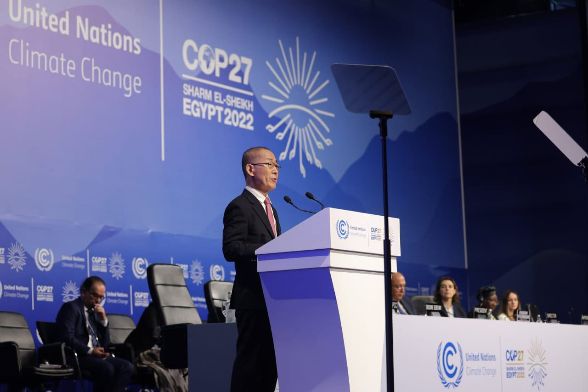
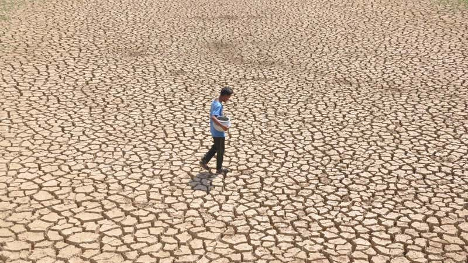
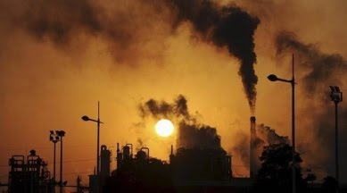
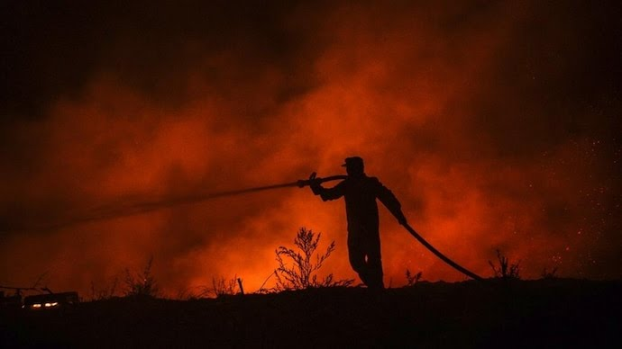
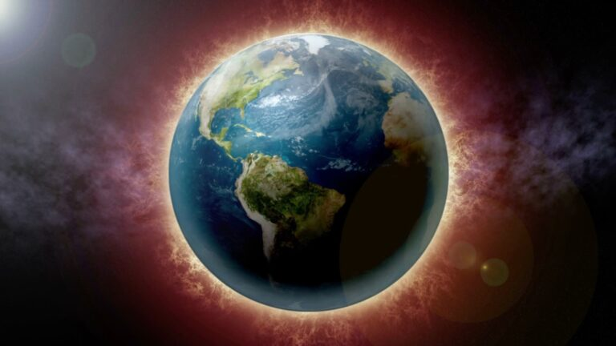

Climate Change Is Speeding Toward Catastrophe. The Next Decade Is Crucial, U.N. Panel Says.
Published March 20, 2023
Earth is likely to cross a critical threshold for global warming within the next decade, and nations will need to make an immediate and drastic shift away from fossil fuels to prevent the planet from overheating dangerously beyond that level.The report, by the Intergovernmental Panel on Climate Change, a body of experts convened by the United Nations, offers the most comprehensive understanding to date of ways in which the planet is changing. It says that global average temperatures are estimated to rise 1.5 degrees Celsius (2.7 degrees Fahrenheit) above preindustrial levels sometime around “the first half of the 2030s,” as humans continue to burn coal, oil and natural gas.
March 2023 Was World's Second Hottest on Record, Antarctica Sea Ice Reached Second-Lowest Extent: Report
Published April 08, 2023
Placing second always comes with its own set of bittersweet feelings. But when it comes to global warming and the ever-increasing amount of emissions we're dumping into the atmosphere, we can only hope not to break warming records from the previous year.Tragically enough, we did come second in two different aspects this time; according to the Copernicus Climate Change Service's (C3S) latest monthly insights on March 2023, things are heating up like never before — literally.
Sticking to 'cold, hard' climate facts can end global warming: Guterres
Published 13 March 2023
Nearly half the world's population is living in the danger zone of climate impacts, the 2022 IPCC report said. Noting that investments in adaptation must be scaled up, the report also indicated that it is possible to limit global warming to 1.5 degrees Celsius with rapid and deep emissions reductions across all sectors of the global economy. “The facts are not in question, but our actions are,” he said to the panel. “It is not too late, as you have shown.” Approaching COP28, he encouraged IPCC to provide leaders with “solid, frank, detailed scientific guidance to make the right decisions for people and planet”. Leaders “must understand the enormous consequences of delay and the enormous dividends from making the tough but essential choices to accelerate the phasing out of fossil fuels and close the emissions gap, to race to a carbon-free, renewables future, and to secure climate justice, helping communities adapt and build resilience to the worsening impacts,” he said
Not doing enough': IPCC report warns global warming will breach critical threshold by 2030
Updated: March 24, 2023 18:09 IST
Reiterating its earlier findings, the Intergovernmental Panel on Climate Change on Monday reminded the world yet again that it was still not doing enough to rein in global temperatures from breaching the 1.5 degree Celsius threshold despite there being “multiple, feasible and effective options” to do so. In its latest report, the IPCC, a UN-backed global scientific body, said average temperatures had already touched 1.1 degree Celsius above the pre-industrial times, and the 1.5 degree Celsius threshold was “more likely than not” to be reached in the “near term” itself.
Climate change: Earth is 1.1 degrees Celsius warmer than 19th century
UPDATED: Jan 16, 2023 11:58 IST
Since the early 1900s, the Earth has warmed up by about 1.1 degrees Celcius as climate change becomes the biggest destabilising factor across the world. The latest assessment by scientists at the American space agency, Nasa, reveals how the planet is losing its coolness as years become warmer and warmer. In a new visualisation, scientists have shown how in the last two centuries the world has been hit by global warming, which increased drastically in the final years of the 20th century and continued unabated in the 21st century. Nasa, recently, announced that 2022 was the fifth warmest year on record.
Climate Change: India's Future Would Be Warmer, Wetter With Extreme Human Suffering
First Published: Mar 17,2023 05:15PM
The Intergovernmental Panel on Climate Change (IPCC) synthesis report is due for release this month. The report will collate the contents of the three Working Group (WG) Reports released during 2021-2022 on science (WG1); impacts, adaptation, and vulnerability (WG2); and mitigation (WG3) and the Special Reports on climate change and land; ocean and cryosphere in a changing climate; and global warming of 1.5°C. The three WG Reports have already highlighted that “Climate change is impacting all parts of the world, and more severe impacts can be expected in the future if greenhouse gas emissions are not cut down by half in this decade. Adaptation actions are the need of the hour,” says Dr Indu K Murthy, Principal Research Scientist heading Climate, Environment and Sustainability at the Centre for Study of Science, Technology and Policy (C-STEP).